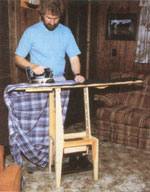
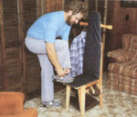
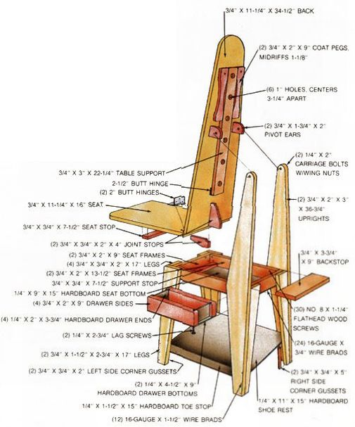

If you happen to be tight on space and cash, this $20 (or less) project might be just the ticket.
Cozy living quarters are great for conserving heat and rent money, but a shortage of storage space can sure put a cramp in an active person's lifestyle. For example, just the thought of using-and finding an out-of-the-way place to stash-such a basic necessity as an ironing board in tight digs is enough to send some folks to the cleaners. Well, if this scenario sounds all too familiar, you might be interested in putting together our inexpensive and splendidly practical high-back valet chair that unfolds to become-you guessed it-a compact ironing board!
Laugh if you wish, but this humble pine seat asks little in the way of space while providing two coat pegs, shoe storage, and underside accommodations for cuff links, tie clips, and the like. And when the heat's on, the hinged bottom and back can be locked horizontally to take care of any "pressing engagements." Furthermore, the denim upholstery fabric - backed with cotton batting - is tough enough to serve well in either capacity.
MOM's hybrid high-back is constructed, for the most part, of softwood shelving, though you'll notice that we did use some 1/4" hardboard and assorted hinges and fasteners to complete the project. Our annotated illustration describes each component's dimensions, but if you don't have a collection of one-by scraps to rely upon, rest assured that all the pine pieces can be trimmed from a single 12-foot length of 1 X 12.
Probably the best way to approach this project is to size all the parts first and then fasten them together as shown. A crosscut, a ripsaw, and a coping blade will handle the cutting chores, though a circular saw with a combination blade would make things a whole lot simpler. You'll also need a small wood chisel and a hammer to provide recesses for the flush joint hinges, and a drill with 1/16", 1/8", and 1/4" bits to bore the necessary fastener holes. A 1 " hole saw, as well, would make short work of the half-dozen openings in the 3"X 22-1/4" table support . . . and a few carefully executed strokes with a handsaw should take care of the dadoes that secure the drawer ends.
For safety's sake, trial-fit the matching leg parts together first, then use a good yellow carpenter's glue at the joining surfaces in addition to the screws and nails called for. When assembling the ironing table, be certain the 1-3/4" X 2" pivot ears and their central holes are positioned so the chair back lifts without binding. Then take extra care with the joint stops to assure that the two-part pressing platform is straight. (The same attention should be given the 3" X 22-1/4" table support to guarantee a level working surface.)
The finishing touches are a matter of taste, but we simply sanded the boards and dressed them with polyurethane, then fitted the batting and denim cover to the extended platform . . . trimmed the material to match the wooden pattern . . . stitched the binding around the exposed borders . . . and stapled the cloth to the boards' rounded edges (you may wish to use upholstery tacks instead). The result, we think, is rather pleasant to look at . . . and goes a long way toward making space where there seems to be little.
|
 |
 |
 |